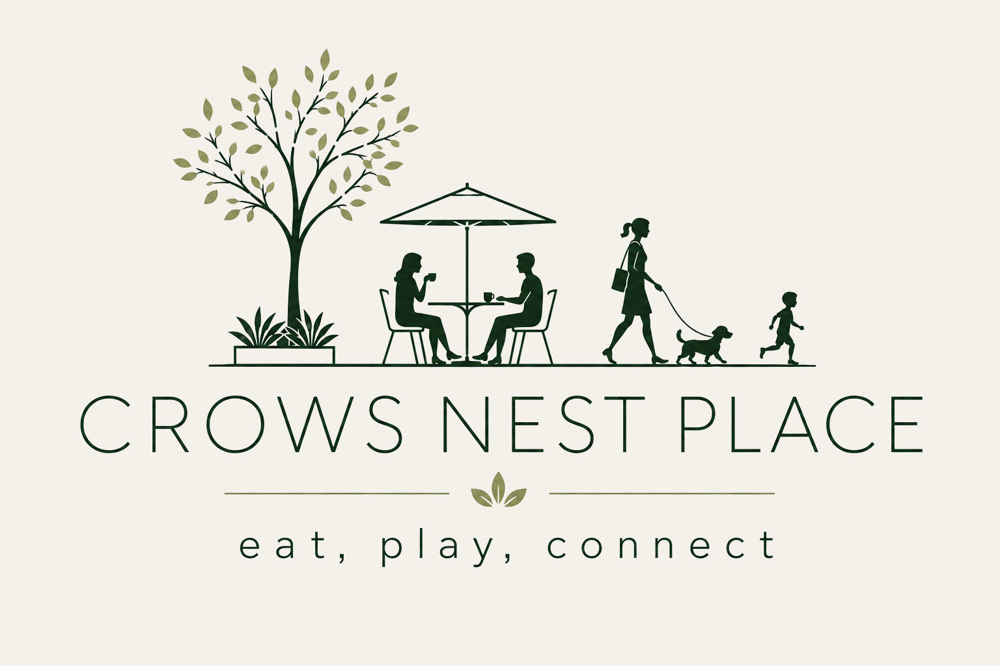

Crows Nest desperately needs more open space.
By 2036, there will be nearly 30,000 people living in Crows Nest - St Leonards. That's around 20,000 more people. Almost 90% of residents in the North Sydney LGA will live in apartments, relying on shared open spaces, parks and facilities for recreation, health and wellbeing.

We don't have enough open space now!
Make Willoughby Road pedestrian only
(from Clarke Street to Albany Street)
Transform it into Crows Nest Place — a vibrant pedestrian-only space where people can eat, play and connect.
Re-route the buses!
Help us move buses away from Willoughby Road to a nearby location, and create a street for people. To do this, we need a commitment from the NSW Minister for Transport to reroute the Sydney Buses currently using Willoughby Road, and to help us create Crows Nest Place.
Make it happen

Community information session
Thursday 22 October 2026
Johnson Hall
Ernest Place, Crows Nest
For the pedestrianisation of Willoughby Road, Crows Nest
To:
The Hon. John Graham MLC — Special Minister of State, Minister for Transport, Minister for the Arts, Minister for Music and the Night-time Economy
The Hon. Jenny Atkinson MP — Minister for Roads, Minister for Regional Transport
We, the undersigned residents, workers and supporters of Crows Nest, call on the NSW Government to reroute bus services away from Willoughby Road to a nearby alternative location, so that Willoughby Road between Clarke Street and Albany Street can be transformed into a pedestrian-only precinct — Crows Nest Place.
We ask the NSW Government to work with North Sydney Council and the community to:
- Reroute bus services from Willoughby Road to a nearby location that continues to provide efficient public transport access.
- Make Willoughby Road, between Clarke Street and Albany Street, pedestrian-only.
- Support the creation of Crows Nest Place — a vibrant public space with trees, seating, outdoor dining and room for community events, making the most of the new Metro station.
Why this is needed:
- Crows Nest is one of Sydney's fastest-growing centres, yet it has very little public open space. With thousands of new residents and visitors arriving with the Sydney Metro, our community urgently needs a place to gather, relax and connect.
- Investigation of the proposal is already included in North Sydney Council's Delivery Plan (2026/29) with a study for the closure, budgeted this financial year (2026/27).
- If approved, it would create approximately 4,300 sqm of new active public space along Willoughby Road — complementing Ernest Place and the new Hume Park (Stage 1, and Stage 2 due for completion in 2027/28) — bringing the total activated public space in the precinct to approximately 11,300 sqm.
- Rerouting buses to a nearby location would preserve efficient public transport access for the area while removing through-traffic from the heart of the precinct.
We urge the Ministers to support the creation of Crows Nest Place.
